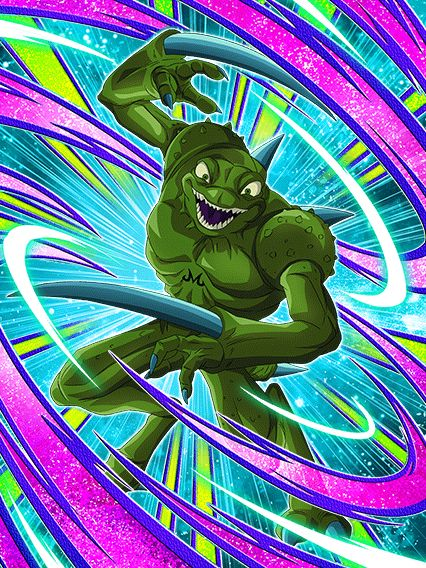

DATA DE LANÇAMENTO: 06/03/2026
E mais uma vez, fizeram um Card secundário bom.
Esse cara é focado em dar suporte e desviar, tendo 85% de chance de desvio, suporte por 3 turnos e múltiplos adicionais estando no slot 3 com aliados "Majin Buu Saga" ou Extreme Class no time
Ele também tem uma habilidade forte, que é ganhar desvio garantido por 1 turno se ele começar o turno no slot 1
Não é insanamente forte, já que você não tem como escolher quando vai usar esse desvio garantido, mas certamente vai ajudar o Card a envelhecer bem.
Nota dos Links:
04/10
Nota das Categorias:
05/10
Você chegou ao fim dessa página!
Obrigado por ler tudo, e fica a vontade pra ver outras